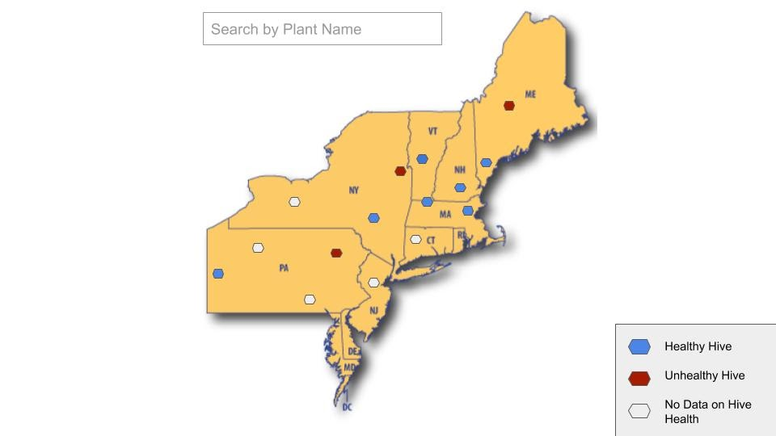
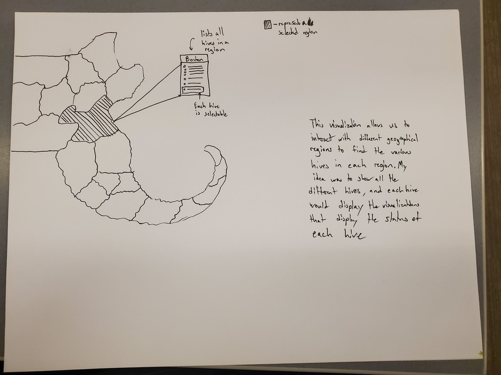
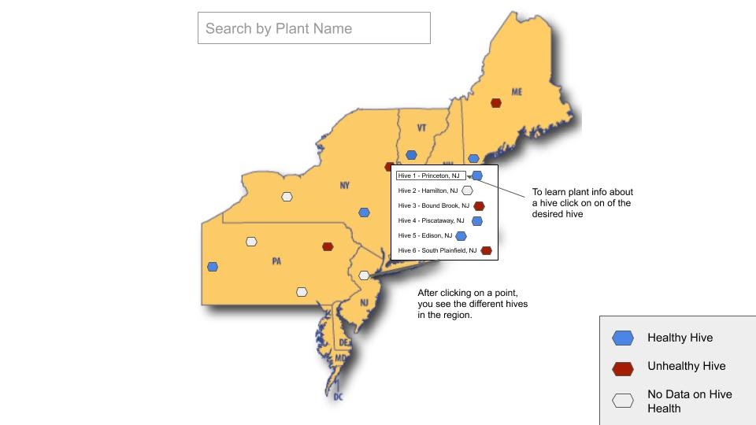
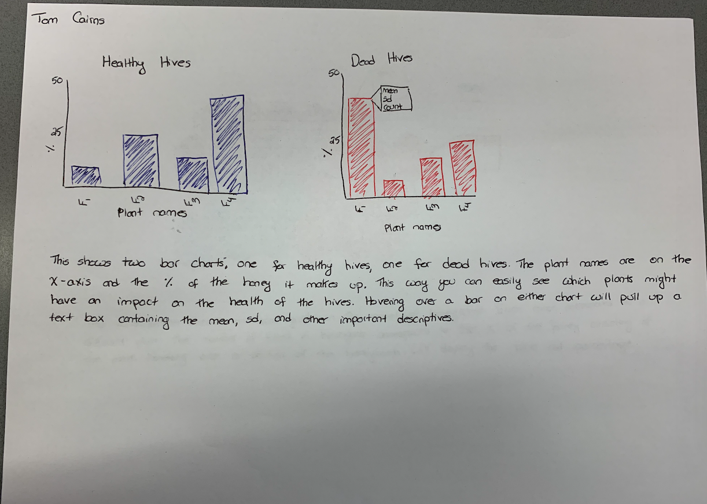
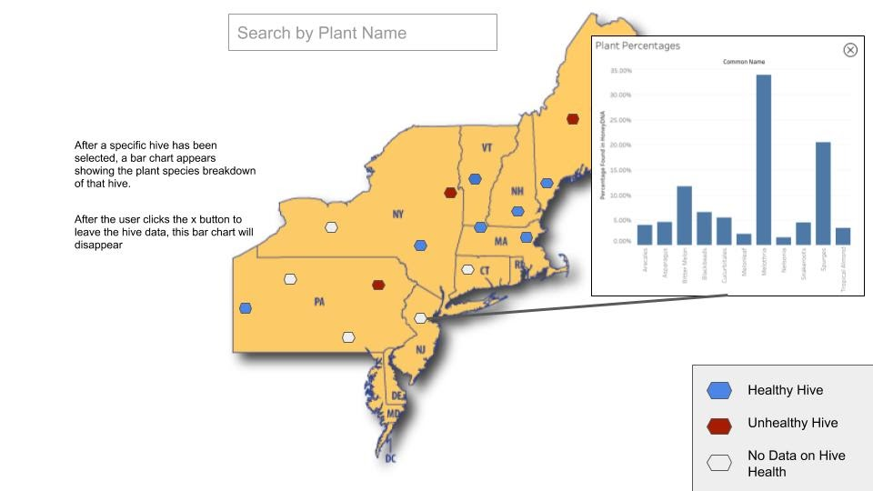

Tom Cairns, Sid Radhakrishnan, Ryan Liang, Lilly Olson
Service-Learning Course Project as part of DS 4200: Information Presentation and Visualization, taught by Prof. Dylan Cashman, Data Visualization @ Khoury, Northeastern University.
Our group worked with the Best Bees Company in Roxbury whose mission as a company is to improve bee health. To do this they set up and care for hives around the country, monitoring and collecting data from each. They invented a technique to analyze the plants that make up the honey produced by the hive called HoneyDNA. They are interested in seeing if there are certain species of plants are correlated with hive health. To do this they wanted a visualization that made it easy to compare the health of the hives with the plants found in the honey.
One of the main goals of our project was to identify areas where hives were doing well. This was to try to narrow down areas that might have healthy bee hives and compare them to areas that had unhealthy hives. Therefore we wanted to use a map as one of our visualizations. Our other task was to look at the presence of different plants in the honey of different hives. We decided the best way to visualize this was with a bar chart for each hive.
As can be seen in the image above it is easy to see areas of these healthy hives. To use this visualization the first interaction involves hovering the mouse over a point on the map. This will bring up a tooltip showing the name of the city. The circles are color encoded to represent the health of the hives. Clicking on one of the circles on the map, representing a hive or a group of hives. This will update the bar chart with the HoneyDNA of the hive selected. The title of the bar chart changes to show the HiveID and the location and the color of the bars follows the same encoding as the points on the map to easily see the condition of the hive. There is also a table to the left of the bar chart containing a list of all the hives ordered by city. This enables the user to see the health of different hives within the same city, which could not be visually represented on the map. Clicking a row in the table will update the barchart and increase the radius of the point on the map to indicate its location. Hovering over a bar on the barchart will pull up a tooltip showing the name of the plant so it is easier to read than along the x-axis. Clicking one of these bars will highlight the rows in the table where a hive also utilized that plant. It will also cause all the points on the map that do not contain that plant to become a dark grey. This makes it easy to identify on the map which points contain the selected plant.
We used a couple different data sets to compile this visualization. We were given an excel file containing the HoneyDNA breakdown and location for every hive Best Bees had data on. Each sheet represented a different hive. We split this data into individual csv sheets to be more easily accessed and referenced. The location of each hive was given by city and state so we used a Python script to find the latitude and longitude coordinates of each location. We were also given a couple different excel files containing the condition of the hives for the last four years. Using these files we created a single file containing the condition of the hive for the year the HoneyDNA sample was collected. We also used a JSON file provided during an online lecture containing the data necessary to create a map of the United States.
The first goal was to show areas of good hive health. We also wanted to be able to identify the plants that makeup the honey of each hive. Using this we want to see if there are any correlations between plants and hive health.
The areas of good bee health were visualized on the map with the color green. By looking at the map it is easy to see if an area has good bee health just from the color encodings. Clicking on point on the graph will update the bar chart in the visualization so the plants found in the HoneyDNA can be seen visually. This way it is easy to see if the hive gets most of their pollen from one type of plant or from a variety of different plants. This can then be compared to other healthy hives to see if there is any correlation between the plants used by the bees and the health of the hives.
It was also important to our client to see if a particular plant was correlated with improved hive health. Therefore we added a feature that enabled the user to click on a particular plant from the bar chart. This would then highlight the hives in the table that also utilized this plant and updated the map so that any hive that did not utilize the plant would become a dark grey. This made it easy to visually see the distribution of hives in the US that utilized this particular plant.
Our designs started off more ambitious either planning on dividing the data by county or just using dots to represent the location of different hives. This later changed to having dots representing locations of hives. An area with multiple hives would have one dot representing the location of all the hives in that area. A table was added to easily find the cities with multiple hives and to select the hives from the table to see the distribution of plants in the HoneyDNA. The color encoding was also changed to easily see the difference between a healthy hive or a dead hive. And another color was added to show hives that did not have health data.
 We also had a design for different bar charts representing the average percentage of plants found in healthy hives and unhealthy hives. This was later changed to be visualized from each hive instead of finding the average. Our final design included a box that popped up on top of the map, but this would hide part of the map visualization so we decided to move it to underneath.
 One of the major improvements suggested from the usability testing was to make sure to include axes labels on the bar charts. It was also recommended to have fewer points on the map so it would be more easily read and to remove overlapping points of hives in the same city. The barchart was initially difficult to read with multiple hives being displayed at once so changing to one point representing each city made the barcharts much more readable.
We were able to plot points on a map of the US to show the location of hives with HoneyDNA data. We adjusted the color of these points to be able to tell where there were healthy hives, dead hives, or hives with no health data. The barchart underneath the map updates when once of these points is clicked to show the HoneyDNA of that specific hive. A table was added to easily select different hives from the same area. A feature was also added where a plant could be selected from the barchart and this would highlight the other hives in the table and on the map that contained this type of plant.
There is more work that can be done for the future. More data can be collected on the condition of the hives to better visualize areas of improved bee health. The Urban Beekeeping Laboratory would like to add this visualization to their website so that it can be accessed by people who are interested in where bees have the best health and which plants might provide benefit to the overall health.
Some code for our visualization including rendering the map and adding points was taken from the in class programming assignment d3 tutorial.